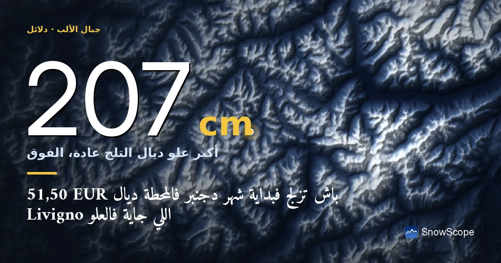

51,50 EUR باش تزلج فبداية شهر دجنبر فالمحطة ديال Livigno اللي جاية فالعلو
51,50 EUR هو الثمن اليومي ديال البيي ديال التلفريك للبالغين فـ Livigno خلال فترة العروض ديال بداية دجنبر. هاد الثمن الرخيص كيبقى حتى لـ 18 دجنبر 2026 وهو أحسن طريقة باش تزلج فهاد الواد الطالياني العالي بميزانية محدودة. تقدر تستافد من 83 كم ديال البيست بتكلفة قل بزاف يلا جيتي قبل ما يوصلو افواج ديال العطلة ديال الكريسماس.
شوف توقعات التلج مباشرة ديال Livigno فالتطبيق ديال SnowScopeالعلو ديال التلج، التنبيهات والخريطة 3D، فابور.
تمن رخيص قبل الزحام ديال الكريسماس
التزلج فبداية الموسم طريقة ذكية باش توفر الفلوس يلا عرفتي فين تمشي. فـ Livigno، السيت الرسمي كيقدم بيي ديال نهار واحد للبالغين بـ 51,50 EUR خلال فترة العروض من 28 نونبر حتى لـ 18 دجنبر 2026. هادي صفقة واعرة لمنطقة تزلج فيها 37 تلفريك وارتفاع ديال 979 م. يلا بقيتي سيمانة كاملة، البيي ديال 6 ايام للبالغين كيدير 258,50 EUR فنفس الفترة.
القرية جاية فـ 1811 م، وهادشي عالي بزاف بالنسبة للألب. هاد العلو كيساعد باش يبقى الجو بارد والتلج ناشف حتى فبداية الشتا. حيت التلفريك اللول كيبدا من 1811 م، ما خاصكش تخاف من الشتا فالعلو النازل بزاف بحال فمحطات خرين. بالنسبة لمتزلج كيبغي يوفر، هاد 3 السيمانات فدجنبر كيعطيو أحسن توازن بين الثمن الرخيص والوصول لمنطقة جبلية كبيرة.

التوقعات ديال التلج فبداية دجنبر
العلو ديال التلج كيتبدل على حساب البلاصة فين كتزلج فالجبل. فقمة التلفريك فـ 2791 م، التاريخ ديالنا ديال التلج كيبين بلي كاين 30 سم أو كثر ديال التلج فـ 93 % من الشتوات اللي فاتو خلال السيمانة اللولة ديال دجنبر. فالسيمانة التالتة، من 15 لـ 21 دجنبر، هاد الرقم كيوصل لـ 100 % من الشتوات اللي فاتو. هادشي كيخلي قمة الجبل رهان آمن بزاف للتدوار فبداية الموسم.
وسط الجبل فـ 2301 م حتى هو عندو احتمالات مزيانة للسيمانات اللولين. فالسيمانة اللولة ديال دجنبر، كاين 30 سم أو كثر ديال التلج فـ 57 % من الشتوات اللي فاتو. هادشي كيتحسن لـ 85 % من الشتوات اللي فاتو فوسط الشهر. فـ 13 نونبر 2026، العلو ديال التلج دابا هو 1 سم فالقاعدة و 2 سم فالقمة. التوقعات ديال جوج سيمانات كتقول بلي كاين ما بين 12 سم لـ 26 سم ديال تلج جديد جاي للجهة الفوقانية.
القاعدة ديال المحطة فـ 1811 م غالبا كتكون ناقصة فبداية دجنبر. فدجنبر عادي، العلو ديال القاعدة كيكون 28 سم. خلال السيمانة اللولة ديال الشهر، كاين 30 سم أو كثر ديال التلج غير فـ 30 % من الشتوات اللي فاتو. هادشي علاش حسن تركز التزلج ديالك فالبيستات العاليين فين منطقة التزلج كتوصل لـ 2791 م. التلج غالبا كيبقى من أواخر شهر أكتوبر فالتحت ومن أواخر شهر شتنبر فالقمة.
كيفاش كيتبدلو التمنات فآخر دجنبر
يلا تسنيتي حتى لآخر الشهر، التمنات كيطلعو بزاف. من 19 لـ 25 دجنبر 2026، البيي ديال نهار واحد للبالغين كيطلع لـ 66,00 EUR. واخا احتمالات التلج فالقاعدة كيتحسنو لـ 57 % باش يكون 30 سم أو كثر فالسيمانة اللخرة ديال الشهر، التكلفة الزايدة ربما ما تستاهلش بالنسبة لواحد كيسافر بميزانية.
التمنات الغاليين كيبداو فـ 26 دجنبر 2026 للموسم العالي. البيي ديال نهار واحد للبالغين كيولي بـ 74,50 EUR. للمقارنة، العلو المعتاد فـ 15 دجنبر كيكون 81 سم فالقمة و 45 سم فوسط الجبل. واخا التلج كيكون غارق، راك كتخلص كثر بزاف على نفس 83 كم ديال البيستات. البقاء ففترة العروض اللي كتسالي فـ 18 دجنبر هو أحسن طريقة باش تخلي المصاريف ديالك ناقصة.
مقارنة Livigno مع Pontedilegno-Tonale
مزيان تشوف خيارات خرين بحال Pontedilegno-Tonale. هاديك المحطة عندها قاعدة هابطة بزاف فـ 1120 م، وهادشي كيعني بلي التحت ديال الجبل غالبا كيكون ناقص بزاف. فدجنبر عادي، القاعدة فـ Pontedilegno-Tonale فيها غير 17 سم ديال التلج فـ 15 دجنبر. بالمقابل، Livigno فيها 27 سم فالقاعدة ديالها فنفس التاريخ. Livigno فيها حتى بيستات كثر، بـ 83 كم مقارنة بـ 56 كم فـ Pontedilegno-Tonale.
ولكن، Pontedilegno-Tonale عندها محطة عليا طالعة فـ 2993 م. هاد العلو كيعطيها علو معتاد فدجنبر ديال 101 سم فالقمة، اللي كثر من 85 سم العلو المعتاد فالقمة ديال Livigno. ما قلبناش على التمنات ديال Pontedilegno-Tonale فالسيت الرسمي، داكشي علاش ما نقدروش نقارنو التكاليف. بالنسبة لمتزلج كيقلب على أرخص ثمن، العرض ديال 51,50 EUR فـ Livigno هو اختيار صحيح ومؤكد.
التوجهات ديال التلج على المدى البعيد فالواد
التاريخ ديالنا ديال التلج ديال 46 شتوة اللي فاتو كيبين بلي دجنبر فالحقيقة كيولي فيه التلج كثر فـ Livigno. فوسط الجبل، المعدل ديال دجنبر كان 39 سم خلال 15 شتوة اللولة بين 1980-81 و 1994-95. فـ 15 شتوة اللخرة بين 2011-12 و 2025-26، هاد المعدل طلع لـ 52 سم. هادي علامة مزيانة للناس اللي كيبغيو يزلجو فبداية الموسم.
قمة التلفريك شافت زيادة كبر. المعدل ديال العلو فدجنبر طلع من 59 سم فـ 15 شتوة اللولة لـ 92 سم فـ 15 شتوة اللخرة. واخا الشتوة اللي فاتت كانت ناقصة بمعدل ديال دجنبر غير 12 سم فالقاعدة، التوجه على المدى البعيد قوي. أنقص دجنبر فالقمة كان فـ 2024-25 بـ 37 سم، اللي باقي كافية باش تغطي الحجر فالبيستات العاليين.
نصايح للي كيتزلجو
- حجز البيي ديالك فالسيت الرسمي قبل 18 دجنبر باش تضمن التمن ديال العرض 51,50 EUR.
- استهدف السيمانة ديال 15 لـ 21 دجنبر باش يكون عندك احتمال ديال 100 % تلقى على الأقل 30 سم ديال التلج فقمة الجبل.
- ركز التزلج ديالك فالبيستات اللي فوق وسط الجبل فـ 2301 م فين التلج كيكون مضمون كثر فبداية دجنبر.
- شوف النشرة ديال الانهيارات قبل ما تزلج برا البيست، خصوصا يلا التلج الجديد وصل للمجال ديال 26 سم ديال التوقعات.
خرائط أخرى (مواقع خارجية)
المراجع والمصادر
- Livigno, official ski pass price list 2026-27 (PDF) www.livigno.eu/hubfs/tariffe_26-27.pdf
- SnowScope, December snow at three heights and today's snow map snowscope.app/
على هاد الأرقام
العلو ديال التلج فالمحطات هو أكثر تلج فالجهة الفوقانية فالتاريخ المكتوب؛ هادو تقديرات لمنطقة، ماشي قياس فنقطة وحدة. التوقعات يمكن تتبدل. ديما شوف النشرة الرسمية ديال الانهيارات قبل ما تخرج من البيست.
النشرات الرسمية ديال الانهيارات: AINEVA – Associazione Interregionale Neve e Valanghe
كيفاش تستاشهد بهاد المقال
للبحث، التعليم ولا الصحافة: الأرقام والرسومات تقدر تعاود تخدم بيهم بحرية تحت CC BY 4.0 مع هاد الاستشهاد.
SnowScope (2026), 51,50 EUR باش تزلج فبداية شهر دجنبر فالمحطة ديال Livigno اللي جاية فالعلو, https://snowscope.app/blog/ar/2026/11/livigno-december-ski-promo-price-snow-odds-2026.html, تشاف ف 2026-11-14
SnowScope (Atlas Labs). (2026, November 14). 51,50 EUR باش تزلج فبداية شهر دجنبر فالمحطة ديال Livigno اللي جاية فالعلو. SnowScope snow reports. https://snowscope.app/blog/ar/2026/11/livigno-december-ski-promo-price-snow-odds-2026.html
BibTeX
@misc{snowscope2026livignodecemberskipromop,
author = {{SnowScope (Atlas Labs)}},
title = {51,50 EUR باش تزلج فبداية شهر دجنبر فالمحطة ديال Livigno اللي جاية فالعلو},
year = {2026},
month = nov,
howpublished = {\url{https://snowscope.app/blog/ar/2026/11/livigno-december-ski-promo-price-snow-odds-2026.html}},
note = {Published 2026-11-14 13:29 UTC; accessed 2026-11-14}
}· CC BY 4.0 · الطريقة، الداتا والأدوات →
Livigno: التلج والحرارة حسب العلو، هاد الشتا مقارنة مع اللي فاتت (الأدوات) →
تابع Livigno
فابور: ميساج ملي يجي التلج، والتوقعات كل صباح.